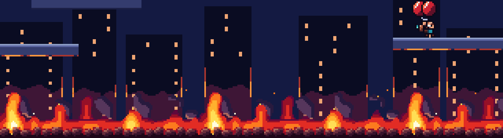
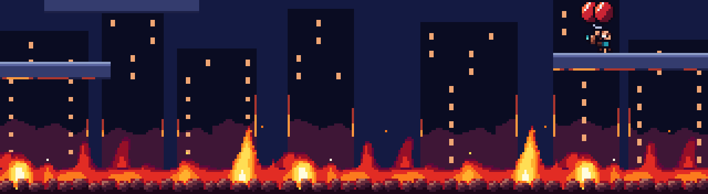
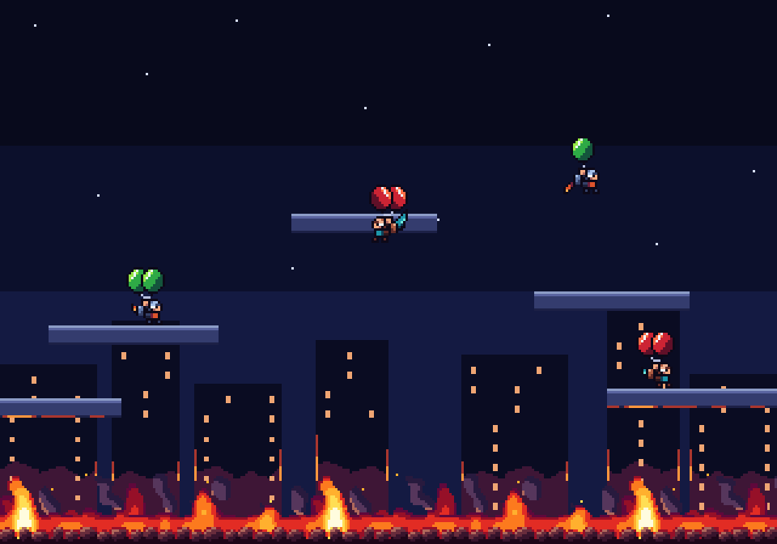
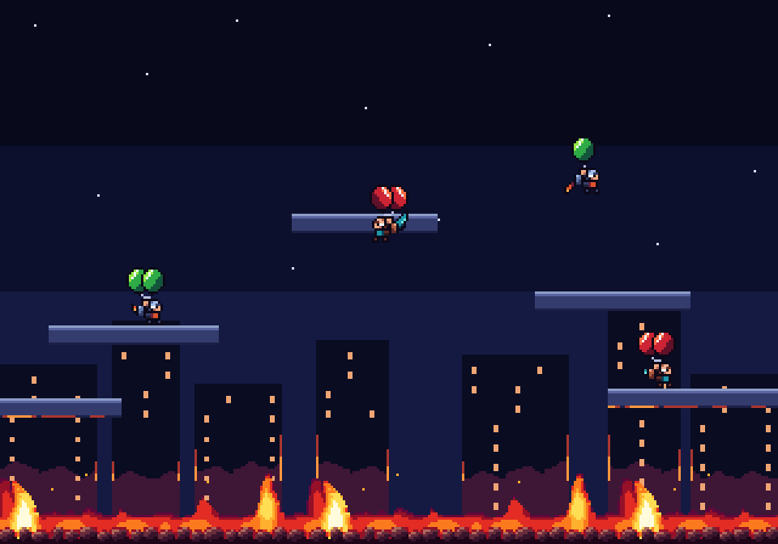
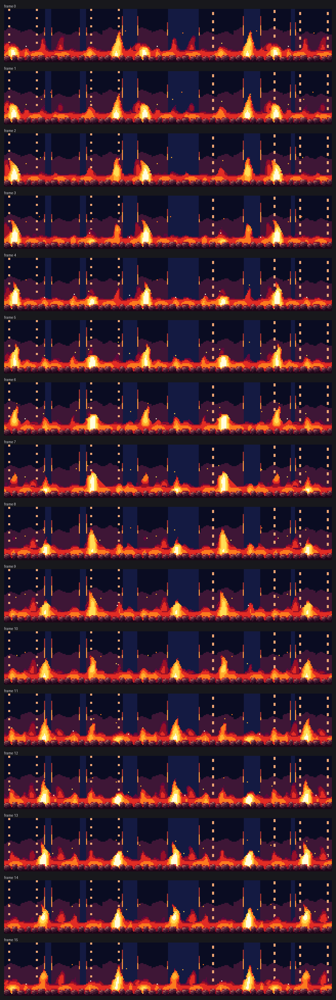
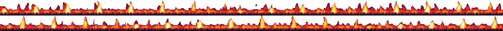
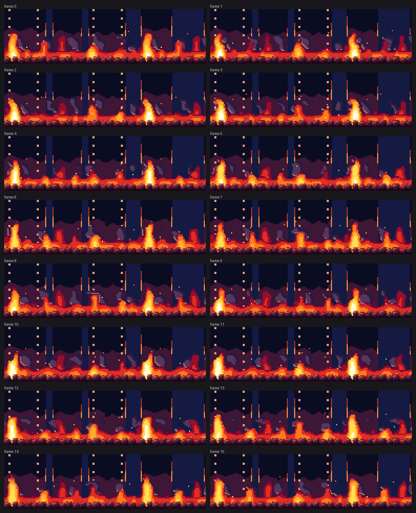

Three changes against version 5: a sharp leaning tip, a tall flame that moves between four places, and no smoke. Same scene, same strip height (32 pixels), same 16 frames at 4 video frames each.
View at 100 percent browser zoom.





| Version | Tallest tongue, mean | Lowest | Highest | Second tongue, mean | Smallest gap, tallest to second | Flame pixels per tile, mean | Taper, mean | Tip width, mean |
|---|---|---|---|---|---|---|---|---|
| Version 4 | 18.2 | 14 | 22 | 14.6 | 0 (frames 4, 5, 8) | 334 | 0.73 | 5.8 |
| Version 5 | 21.3 | 20 | 23 | 13.4 | 5 | 392 | 0.51 | 5.3 |
| Version 6 | 21.6 | 19 | 23 | 15.2 | 2 | 403 | 0.38 | 2.9 |
Heights are pixels above the coal line. The coal bed takes the lowest 7 rows of the strip, so 25 is the most a flame can reach. Taper is the width of the tallest tongue at 70 percent of its height divided by its width at 25 percent: lower is sharper. Tip width is the width in pixels at 90 percent of its height.
| Frames | 15, 0, 1, 2 | 3, 4, 5, 6 | 7, 8, 9, 10 | 11, 12, 13, 14 |
|---|---|---|---|---|
| Tile | B | A | B | A |
| Position in the 128 pixel pair | 109 to 112 | 6 to 12 | 83 to 85 | 36 to 41 |
Version 5 kept the tall flame at position 5 to 10 in all 16 frames.


